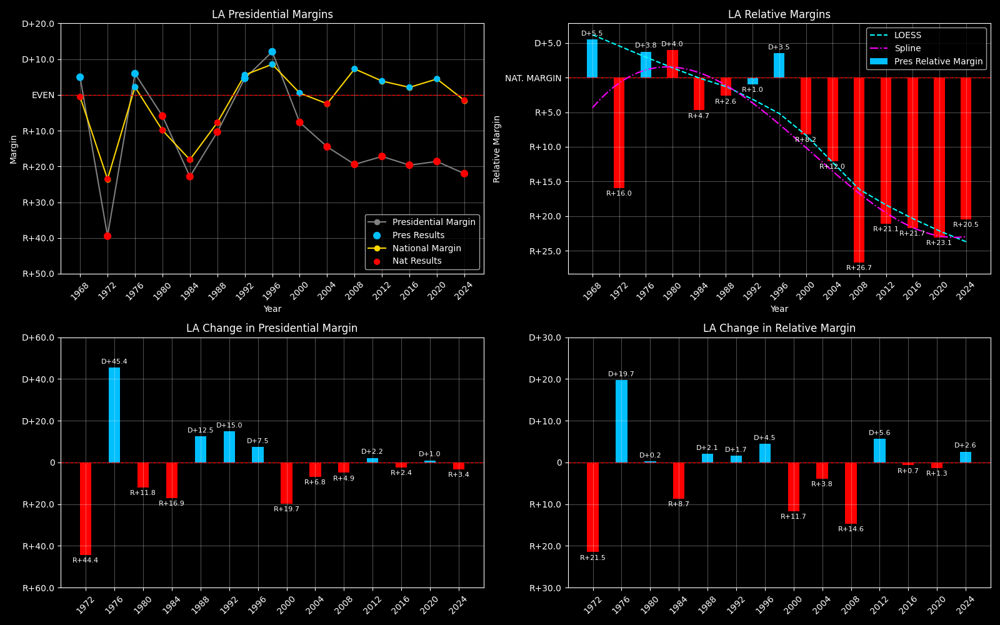

← Back to Map

Louisiana (LA) statewide
Louisiana (LA) — Data
| Year | D | R | Margin | Rel. Margin | Nat. Margin | Margin Δ | Rel. Margin Δ | Nat. Margin Δ |
|---|
| 1976 | 661,365(53.0%) | 587,446(47.0%) | D+5.9 | D+3.6 | D+2.3 | | | |
| 1980 | 708,453(47.2%) | 792,853(52.8%) | R+5.6 | D+4.7 | R+10.3 | R+11.5 | D+1.0 | R+12.6 |
| 1984 | 651,586(38.6%) | 1,037,299(61.4%) | R+22.8 | R+4.6 | R+18.2 | R+17.2 | R+9.3 | R+7.9 |
| 1988 | 717,460(44.8%) | 883,702(55.2%) | R+10.4 | R+2.7 | R+7.7 | D+12.5 | D+1.9 | D+10.6 |
| 1992 | 815,971(52.7%) | 733,386(47.3%) | D+5.3 | R+1.9 | D+7.2 | D+15.7 | D+0.8 | D+14.9 |
| 1996 | 927,837(56.6%) | 712,586(43.4%) | D+13.1 | D+3.5 | D+9.6 | D+7.8 | D+5.4 | D+2.4 |
| 2000 | 792,344(46.1%) | 927,871(53.9%) | R+7.9 | R+8.4 | D+0.5 | R+21.0 | R+11.9 | R+9.1 |
| 2004 | 820,299(42.7%) | 1,102,169(57.3%) | R+14.7 | R+12.2 | R+2.5 | R+6.8 | R+3.8 | R+3.0 |
| 2008 | 782,989(40.5%) | 1,148,275(59.5%) | R+18.9 | R+26.5 | D+7.5 | R+4.3 | R+14.3 | D+10.0 |
| 2012 | 809,141(41.3%) | 1,152,262(58.7%) | R+17.5 | R+21.5 | D+4.0 | D+1.4 | D+4.9 | R+3.5 |
| 2016 | 780,154(39.8%) | 1,178,638(60.2%) | R+20.3 | R+22.7 | D+2.3 | R+2.8 | R+1.2 | R+1.7 |
| 2020 | 856,034(40.5%) | 1,255,776(59.5%) | R+18.9 | R+23.5 | D+4.5 | D+1.4 | R+0.8 | D+2.2 |
| 2024 | 766,870(38.8%) | 1,208,505(61.2%) | R+22.4 | R+20.9 | R+1.5 | R+3.4 | D+2.6 | R+6.0 |
Column explanations
- Year
- Election year.
- D
- Number of votes for the Democratic candidate (raw count).
- R
- Number of votes for the Republican candidate (raw count).
- Margin
- Margin between the two major-party candidates ((D - R)/(D + R)).
- Rel. Margin
- The presidential margin relative to the national presidential margin (Margin - Nat. Margin).
- Nat. Margin
- The national presidential margin for that year ((D_total - R_total)/(D_total + R_total)).
- Δ
- Change (delta) in the value from the previous election year. Blank if no data for previous year.